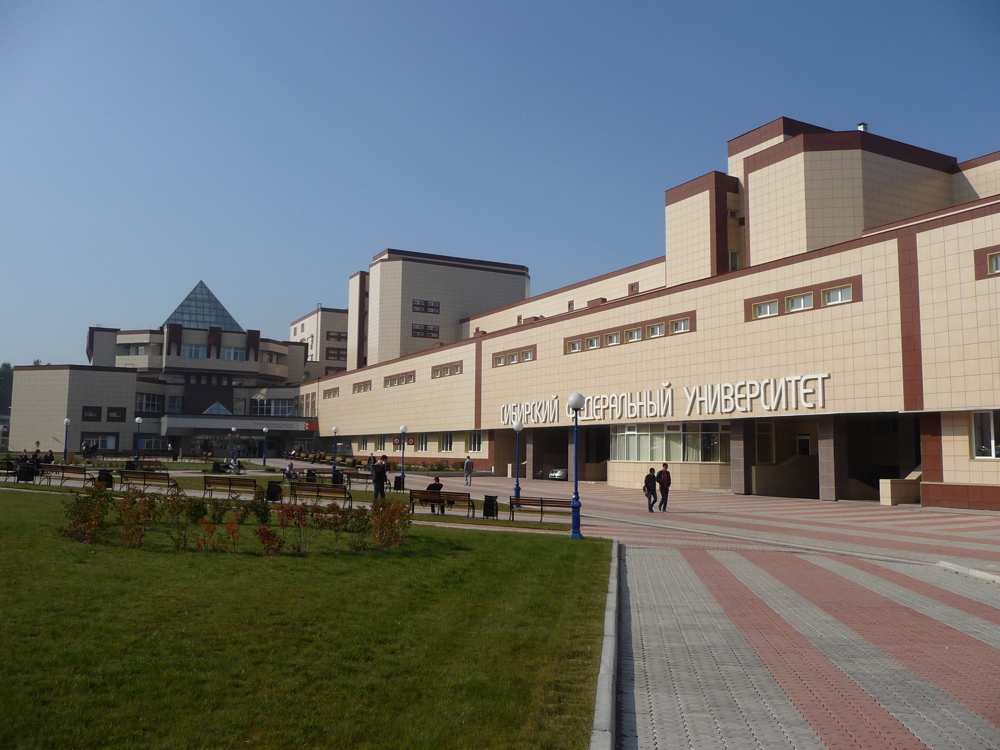

О сайте:
Этот проект создан, чтобы помочь выпускникам нашего края сориентироваться в многообразии возможностей. Мы собрали информацию о местных вузах, актуальных специальностях и создали профориентационный тест. Не знаешь, куда поступать? Начни отсюда!